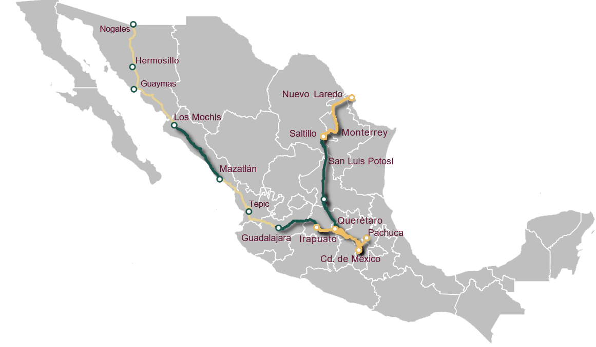

DICCO
DPAO
INICIO
UNIDAD DE CONSTRUCCIÓN
Fase 1 – (787 km)
▶
Ciudad de México – Pachuca
Ciudad de México – Querétaro
Querétaro – Irapuato
Saltillo – Nuevo Laredo
Fase 2 – (1,336 km)
▶
Irapuato – Guadalajara
Querétaro – San Luis Potosí
San Luis Potosí – Saltillo
Mazatlán – Los Mochis